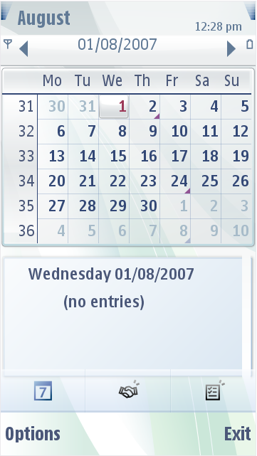
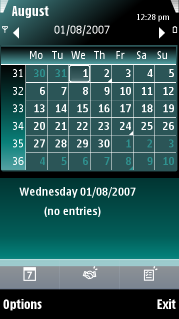

Calendar
The Calendar application has three main parts:
- Calendar frame
- Calendar header frame
- Calendar side frame
The figure below illustrates month views of a default Calendar and
a customized Calendar.
 
Figure:
Default and customized Calendar
The calendar frame and calendar header frame are used as view/header
background in all Calendar views. The structure is the same as with
highlights and pop-ups. The parts used are:
- Four corner graphics
- Four sides graphics
- Center graphic
You can design the corner images individually. The sides are stretched
to fill the size of the area. The center becomes the maximum size of
the graphics area. You can also change the color of the separator lines
and the color of the event indication in the Colors section.